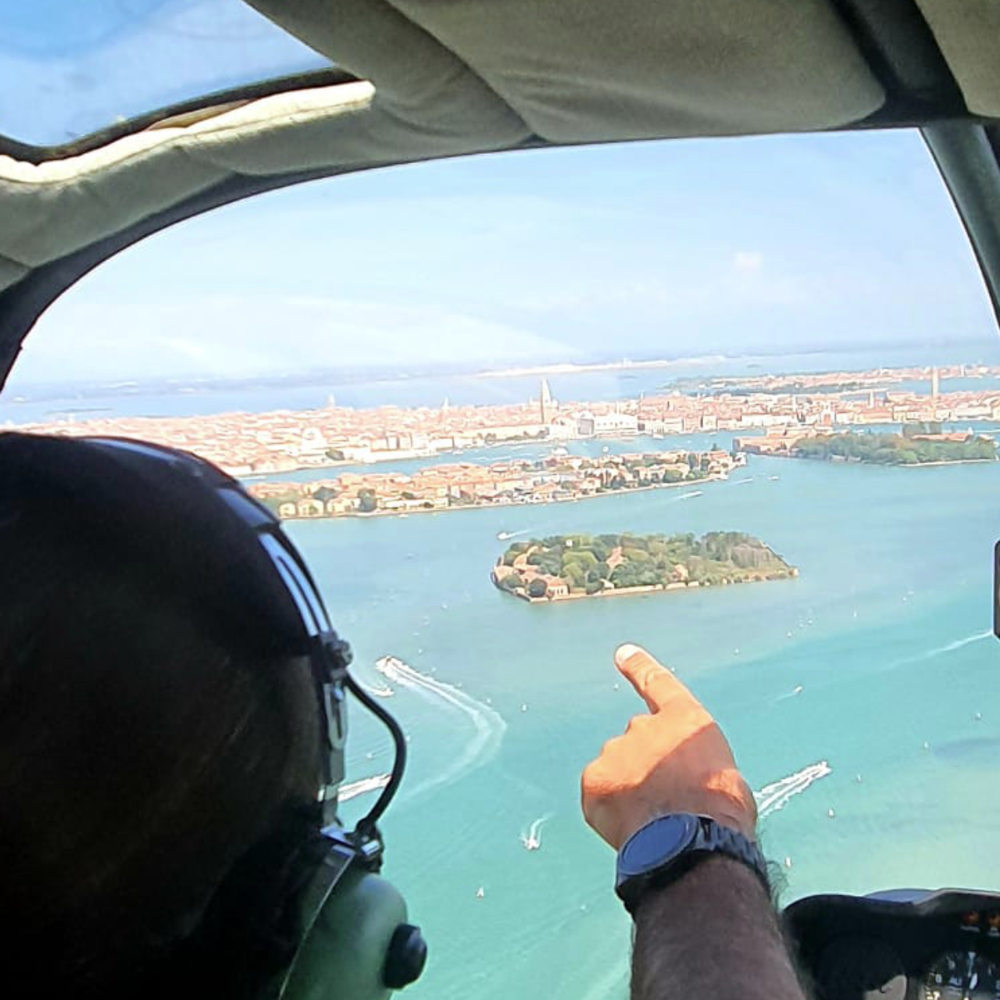
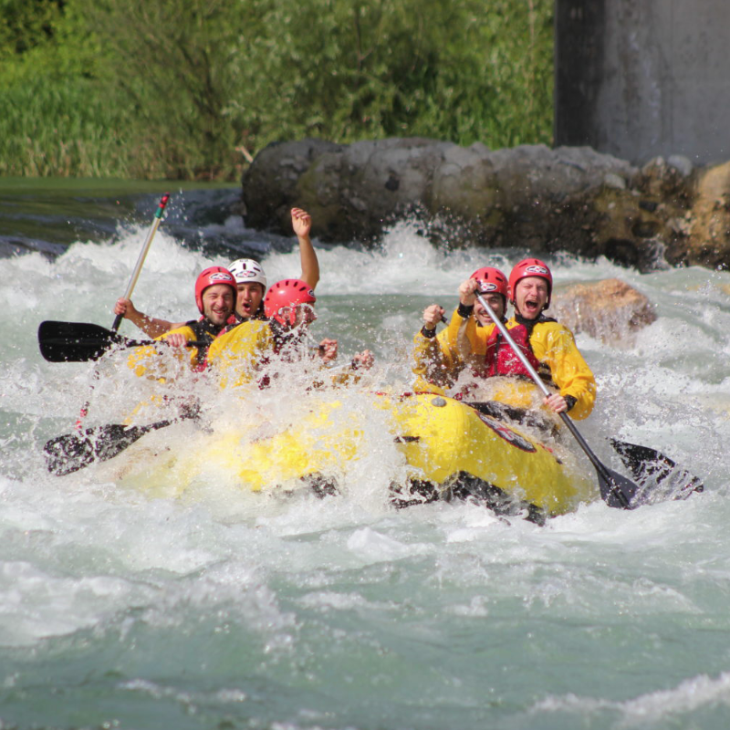

01Prenota diretto
01Prenota diretto4 ospiti · Due livelli
Appartamento Suite Max
- Due camere
- Cucina attrezzata
- Terrazzo privato

Locazione turistica · 026061-LOC-00007
Una casa di famiglia, tre modi di sentirsi a casa.
A Possagno, nel cuore della terra del Canova.
Viale A. Canova
31054 Possagno TV
Prenotazione diretta
Raccontateci quando vorreste arrivare e come immaginate il vostro soggiorno. Vi aiuteremo a scegliere l'appartamento e a conoscere disponibilità e condizioni.
Un fine settimana o qualche giorno in più per conoscere il territorio.
Scriveteci o chiamateci: siamo qui per rispondere alle vostre domande.
Tre appartamenti, ciascuno con una storia e un carattere diverso.

Chi siamo · Le nostre radici
Dai Squee nasce dalla casa di Martin e Gigetta, nel cuore di Possagno. Il nome custodisce una memoria di famiglia: “Squee”, scodelle, è l'antico soprannome della famiglia materna di Massimo, loro nipote.
È lui ad aver dedicato tre anni di energia e passione alla ristrutturazione. Un lavoro pensato per dare nuova vita a questi spazi, conservandone il legame con le persone e con il paese, e aprirli a chi desidera conoscere questo angolo del Veneto.
Oggi la casa accoglie tre appartamenti diversi, accomunati da un'idea semplice di ospitalità: indipendenza, tranquillità e il piacere di sentirsi a proprio agio. Un punto di partenza per incontrare l'arte di Canova, passeggiare tra le colline o concedersi il tempo di rallentare.
Massimo La storia continua, insieme a voi.I nostri appartamenti
La Suite Max su due livelli, il calore del legno di Michele, la terrazza di Rosa e Romeo. Tre modi di abitare Possagno, con cucina attrezzata e spazi da vivere in autonomia.
01Prenota diretto4 ospiti · Due livelli
 02
022 + 2 ospiti · Primo piano
 03
03Servizi inclusi
Tutto ciò che serve per un soggiorno autonomo, comodo e senza frizioni.
Comodo per visitare Possagno, Asolo, Bassano e la Pedemontana.
Connessione disponibile negli appartamenti per viaggio, lavoro e relax.
Ambienti freschi e confortevoli nelle giornate più calde.
Uno spazio esterno per rallentare dopo una giornata nel territorio.
Intrattenimento semplice e immediato in ogni appartamento.
Libertà di organizzare colazioni, pranzi e cene con i propri tempi.
Possagno e il Veneto
Dall'arte di Canova ai borghi della Pedemontana, dalle architetture di Palladio alle colline del Prosecco. Lasciatevi ispirare dai luoghi che circondano la nostra casa.

Arte e cultura
Il Tempio e la Gypsotheca raccontano l'arte di Antonio Canova nel suo paese natale.
Scopri il luogo
Borghi e città
Il Ponte degli Alpini, il Brenta e le vie del centro: una giornata tra scorci, arte e sapori.
Scopri il luogo
Borghi e città
La Rocca e il borgo tra le colline invitano a passeggiare e a fermarsi a guardare il paesaggio.
Scopri il luogo
Architettura
Villa Barbaro a Maser, tra architettura palladiana e paesaggio veneto.
Scopri il luogo
Architettura
Un percorso raccolto tra acqua, geometrie e silenzio nel complesso monumentale Brion.
Scopri il luogo
Natura e memoria
Sentieri, panorami e luoghi della memoria per conoscere la montagna sopra Possagno.
Scopri il luogo
All'aria aperta
Da Bassano ad Asolo, percorsi tra borghi e colline per chi ama viaggiare all'aria aperta.
Scopri il luogo
Vino e territorio
Tra Asolo e Valdobbiadene, un paesaggio di vigneti e cantine da scoprire con calma.
Scopri il luogoIncontri ed esperienze
Persone e realtà del territorio per arricchire il vostro viaggio. Contattate direttamente i partner per conoscere programmi, disponibilità e condizioni delle attività.

Venezia e la sua laguna
Escursioni in barca tra Venezia e le isole della laguna.
Contatta il partner
Voli e tour fotografici
Un punto di vista diverso sul territorio, con il servizio elicotteri FlyVenice.
Contatta il partnerParapendio
Voli in parapendio biposto con istruttore sul territorio del Monte Grappa.
Contatta il partner
Rafting sul Brenta
Rafting e canoa sul fiume Brenta, con il Centro Nazionale Rafting.
Contatta il partnerPer le Grotte di Oliero: visita il sito dedicato ↗
Contatti e canali
Per prenotazioni e informazioni: Viale A. Canova 51, 31054 Possagno (TV), tel. +39 349 4454604, tel. +39 347 8022486, info@daisquee.it.
Scrivi a Dai Squee ↗Book direct
Richiedete disponibilità, appartamento preferito e dettagli del viaggio. Dai Squee vi risponde con una proposta chiara.
Prima di partire
Dai Squee si trova in Viale A. Canova 51, 31054 Possagno, in provincia di Treviso, nel territorio della Pedemontana Veneta.
La casa ospita tre appartamenti: Suite Max, Michele e Rosa e Romeo. Ognuno dispone di cucina attrezzata e bagno privato.
La Suite Max dispone di un terrazzo privato con solarium. Rosa e Romeo offre una terrazza esposta a sud, accessibile dalla camera.
Inviate una richiesta con date, ospiti e appartamento oppure contattate info@daisquee.it o il numero +39 349 4454604. La struttura verifica disponibilità e condizioni prima di confermare.
Possagno e i luoghi di Canova, Asolo, Bassano del Grappa, Villa Barbaro a Maser, il complesso Brion, il Monte Grappa e le colline del Prosecco.
No. Dopo la verifica della disponibilità, la struttura comunica importo e condizioni. L'eventuale pagamento avviene tramite un link dedicato.
Orari, eventuali costi aggiuntivi e condizioni di cancellazione sono da concordare con la struttura e vengono comunicati prima della conferma.
Richiesta diretta
Inviate date e preferenze. Vi risponderemo con la proposta più adatta.
Dai Squee
Il servizio è pensato per rendere il soggiorno autonomo, semplice e confortevole.
Richiedi informazioni →Richiesta ricevutaDai Squee vi contatterà a breve.